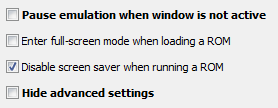
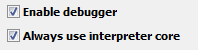

Project64 Debugger
- Download
- Bug Reports & Suggestions
- Debugger Setup
- External Memory Scanner Setup
- Breakpoints Overview
- Commands
- Memory Viewer
- Memory Scanner
- Memory Dumper
- Script Console
- Symbol Manager
- DMA Log
- CPU Log
- Exception Breakpoints
- Stack Viewer
- Stack Trace
Download
Most of Project64’s debugging tools are relatively new, so they are not available in a stable release at this time. To get a version of the emulator with debugging features included, you can download the latest nightly build or build it yourself from source:
- Nightly builds: https://www.pj64-emu.com/nightly-builds
- Source: https://github.com/project64/project64
Unfinished features that are not yet integrated may be found on this Github fork:
Bug Reports & Suggestions
If you have a bug report please post it to the issue tracker:
You can post feature suggestions to the discussion thread:
Debugger Setup
A few settings must be applied to enable Project64’s debugging tools.
- Open Options > Settings…
- Uncheck “Hide advanced settings” and “Pause emulation when window is not active”
- In advanced settings, check “Enable debugger”
- (Recommended) In advanced settings, check “Always use interpreter core”


Enabling the “Always use interpreter core” option will negatively impact game performance, but it is required for some of the debugging features to function.
External Memory Scanner Setup
Project64’s debugger includes a built-in memory scanning tool, but if you would like to use a 3rd-party memory scanner like Cheat Engine, Project64’s “Fixed Rdram Address” setting may be used to make address resolution simpler.
To enable it, open Config/Project64.cfg in a text editor and add Fixed Rdram Address=536870912 under [default]. This setting will force Project64 to always allocate RDRAM at 0x20000000 in process memory.
Note that for optimization reasons Project64 uses little-endian byte ordering for RDRAM, so string data may not appear in the correct order when viewed from an external application.
Breakpoints Overview
Project64's debugger provides the following breakpoint types:
- Program Counter Breakpoints
- Memory Read & Write Breakpoints
- Register Read & Write Breakpoints
- Exception Breakpoints
- Conditional Breakpoints
Program Counter Breakpoints
Program counter (PC) breakpoints pause the CPU when an instruction at a specified address is about to be executed. PC breakpoints may be set or cleared by double-clicking instructions in the Commands window.
Memory Read & Write Breakpoints
Memory read & write breakpoints pause the CPU when an instruction is about to read or write to a specified address in memory. Memory write breakpoints also pause on PI DMA transfers from cartridge ROM to RDRAM. Memory read & write breakpoints may be set or cleared by right clicking bytes in the Memory window.
Register Read & Write Breakpoints
Register read & write breakpoints pause the CPU when an instruction is about to read or write to a specified register. Register read & write breakpoints may be set by clicking or right clicking the labels for the general-purpose registers (GPR) in the Commands window.
Exception Breakpoints
Exception breakpoints pause the CPU at an exception vector when a specified exception or interrupt is asserted. CPU Exception breakpoints may be set or cleared via the checkboxes in the CPU Exception Breakpoints window.
Conditional Breakpoints
Conditional breakpoints pause the CPU when a user-defined condition is met. Conditional breakpoints may be set via the scripting API using events interface callbacks and the debug.breakhere() function.
Commands
The Commands tool is used to read, edit, and debug assembly code, monitor CPU and memory-mapped registers, and manage program counter (PC) and register breakpoints.
PC Breakpoints
PC breakpoints may be toggled by double-clicking addresses or by clicking the "Toggle breakpoint" option in the context menu. The "Run to line" option may be used to set a temporary breakpoint.Register breakpoints
Register read and write breakpoints may be toggled by clicking or right clicking the register labels.
Currently, only general purpose registers are supported. If you wish to set a breakpoint on a memory-mapped register, it can be done from the memory viewer window.
Editing code
Code may be edited by clicking the "Edit code" option in the context menu. Edited code will appear magenta in the command list. Note that edits are temporary; they are not saved to the ROM file.Command list color legend
- Highlighted in yellow: PC is at this address
- Red address: PC breakpoint set at this address
- Brown address: Temporary PC breakpoint set at this address
- Green: Jump instruction
- Yellow green: Branch instruction
- Blue: Stack frame allocation (start of subroutine)
- Red: Stack frame free (end of subroutine)
- Magenta: Code was edited by the user
Register color legend
- Red value: Current instruction writes to this register
- Blue value: Current instruction reads this register
- Red label: Write breakpoint exists for this register
- Blue label: Read breakpoint exists for this register
Shortcut keys
- F1: Skip (Skip command)
- F2: Step (Execute command, break on next command)
- F3: Step over (Execute command, advance PC to return address if command was a JAL)
- F4: Go (Resume execution)
Memory Viewer
The memory viewer is used to monitor and edit memory. Breakpoints and locks may be placed on addresses by right-clicking the displayed bytes or using the shortcut keys described below.
Editor keyboard and mouse commands
Ctrl+C Copy selection to the clipboard
Ctrl+X Copy selection to the clipboard and zero-fill
Ctrl+V Paste data from the clipboard
Ctrl+B Paste data from the clipboard without advancing caret position
Ctrl+T Duplicate current tab
Ctrl+F4 Close current tab
Ctrl+Tab Switch tabs
Ctrl+G Set base address to caret position or beginning of selection
Ctrl+Space Follow pointer
Ctrl+A Select all visible bytes
Ctrl+E Set memory lock at the caret position
Ctrl+R Set memory read breakpoint at the caret position
Ctrl+W Set memory write breakpoint at the caret position
Ctrl+Q Clear all memory breakpoints and locks
Ctrl+F Open search tool
Ctrl+S Open memory dump tool
Ctrl+[1-9] Set byte group size
Ctrl+Z Undo last safe mode edit
Insert Toggle safe mode
Enter Write safe-edited data
Page Down Advance base address down
Page Up Advance base address up
Home Return to caret position
Arrows Move caret position
Ctrl+Arrows Move caret position (single nibble while in the hex column)
Shift+Arrows Adjust selection range
Delete Zero-fill selection
Backspace Zero-fill previous nibble/character or zero-fill selection
Click Set caret position
Mouse drag Make selection
Double click Select byte group
Right click Show context menu
Editor color legend
- FF Read breakpoint set
- FF Write breakpoint set
- FF Read and write breakpoints set
- FF Locked value
- FF CPU read target
- FF CPU write target
- FF Symbol
- FF Value changed
- FF Read-only memory
- FF Edited in safe mode
Tab bar mouse commands
Double click Duplicate tab
Right click Close tab
Status bar mouse commands
Click address range Copy address range to clipboard
Click "Have DMA" Show DMA information
Safe mode
Safe mode is a setting that may be toggled via the insert key or from the option in the context menu. While safe mode is enabled, edits made by the user are not written into memory until the enter key is pressed. This can make it easier to edit pointers and touchy variables without crashing your game.
Memory Scanner
The memory scanner is used to locate variables and strings in memory. Advanced search features are included to aid in searching for variables of unknown values and strings of unknown 1-byte encodings. Found variables may be added to the watch-list so that they may be labeled and monitored.
Watch-list tables are automatically saved as a CSV-like format to "Save/<GAME NAME>.wlst".
Video demonstration
Memory Dumper
The memory dumper is used to dump a chunk of virtual memory to a file. Supported dump formats include raw binary and MIPS disassembly.
Script Console
The script console is used to execute Javascript files from the “Scripts” directory. Project64's scripting API provides hooks for various events, and access to system memory and registers. It also includes file management and networking capabilities which enable it to interact with other programs.
A script may be executed by double-clicking its name in the list. While a script is waiting for events it will be highlighted green in the list, during which time code may be typed into the console to be evaluated in the script’s context.
See “apidoc.htm” for API documentation and examples.
Video demonstration
Symbol Manager
The symbol manager is used to apply names to addresses of functions and variables in memory and monitor their values real-time.
Locating SDK symbols
n64sym (https://github.com/shygoo/n64sym) may be used to generate SDK symbol tables from RAM dumps. Similar functionality may be added to the debugger in the future.
Linker maps
Currently there is no built-in way to load symbols from a linker map or ELF. However, it's easy to convert a linker map to a Project64 symbol table using a script. An example is available here: mapsym.js.Saving
Symbol tables are automatically saved as a CSV-like format to "Save/<GAME NAME>.sym".
DMA Log
The DMA log is used to monitor PI DMA transfers from cartridge ROM to RDRAM. Yellow entries indicate adjacent data chunks.
Signature detection
If the first four bytes of a data chunk are valid alphanumeric ASCII characters, they are displayed in the “Signature” column. This is occasionally useful for file-format identification.
Tracing
The RAM and ROM address fields at the bottom of the window may be used to lookup corresponding source and destination addresses.
CPU Log
The CPU log is used to log the state of the CPU at every opcode execution.
Enabling
This tool can be enabled or disabled via the "Enable CPU Logging" checkbox. The list is not refreshed until CPU logging is disabled or a breakpoint is hit.
Note that this tool incurs a massive performance penalty while enabled, so remember to turn it off when it's not needed.
Buffer size
The buffer size specifies the maximum number of operations that should be logged. This setting exists to ensure the log does not take up too much host RAM. The default of 1024 is good enough for most use cases.
Exception Breakpoints
This window is used to set breakpoints on specific CPU exceptions and interrupts.
Crash diagnosis
To diagnose crashes, all exception codes should be checked. TLB-related codes may need to be unchecked for games that use TLB exceptions to their advantage.
When an exception breakpoint is hit, the CPU will pause at one of the exception vectors (usually at 0x80000180 or 0x80000000) and the COP0 registers (EPC, Cause, BadVAddr) will indicate the cause of the exception. COP0 registers can be viewed in the Commands window under the COP0 tab.
Stack Viewer
This tool shows the memory region that the CPU's stack pointer (SP) register is pointing to, so that the current subroutine’s stack variables may be monitored.
Stack Trace
The Stack Trace tool shows the current call stack.